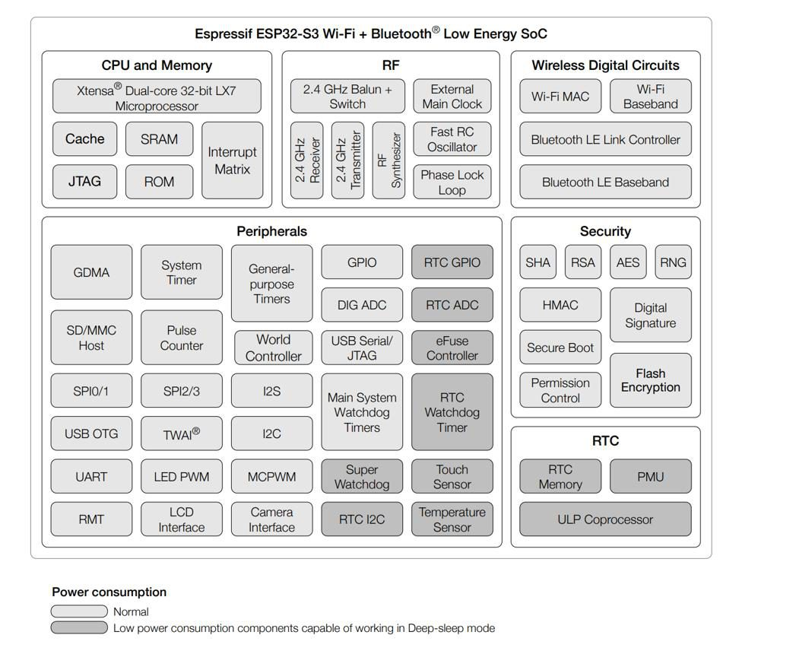

第四课：XIAO ESP32S3 的 Flash、SRAM、PSRAM 与内存管理
这一课进入嵌入式开发中非常重要的部分：内存系统（Memory Architecture）。
如果说 CPU 是负责计算的大脑，那么内存就是程序运行时的工作空间。
很多 ESP32-S3 项目出现以下问题，其实都与内存管理有关：
- 程序编译成功，但运行一段时间后崩溃。
- 摄像头或音频缓冲区创建失败。
- Wi-Fi 运行正常，但加入其他功能后内存不足。
- 出现
Stack overflow。 - 出现
heap_caps_malloc failed。 - 设备频繁重启或出现
Guru Meditation Error。 - 保存的配置断电后丢失。
学完这一课，你应该能够理解 XIAO ESP32S3 的内存结构，并且知道如何让 Codex 正确管理固件的内存资源。
一、ESP32-S3 的内存体系
首先看一下 ESP32-S3 的内存组成。

ESP32-S3 主要涉及五种存储资源：
| 存储类型 | 主要用途 | 特点 |
|---|---|---|
| ROM | 芯片启动代码 | 出厂固化 |
| Flash | 固件、文件、配置 | 断电保存 |
| SRAM | CPU 运行数据 | 高速、容量有限 |
| PSRAM | 扩展运行内存 | 容量较大、速度和访问条件不同 |
| Cache | 加速外部存储器访问 | 减少 CPU 等待 |
其中最容易混淆的是：
Flash 和 PSRAM 都可能通过 SPI 接口与芯片连接，但它们的用途完全不同。
- Flash：主要保存程序和持久化数据。
- SRAM：主要保存 CPU 运行时数据。
- PSRAM：为运行时数据提供额外空间。
二、Flash：程序存放在哪里？
1. 什么是 Flash？
Flash 是一种非易失性存储器。
它有一个非常重要的特点：
断电之后，里面的数据仍然可以保存。
例如：
- 你编写的 ESP-IDF 固件。
- Wi-Fi 配置信息。
- 设备参数。
- 文件系统中的文件。
- OTA 升级固件。
这些都可能保存在 Flash 中。
2. XIAO ESP32S3 的 Flash
需要区分芯片支持能力和开发板实际配置。
ESP32-S3 芯片支持连接外部 SPI Flash，而 XIAO ESP32S3 普通版的官方规格采用 8MB Flash。
这 8MB 并不全部用于应用程序。
因为还需要存储：
- 二级 Bootloader。
- 分区表。
- NVS 配置。
- 应用程序。
- OTA 固件（如果启用）。
- 文件系统（如果配置）。
3. Flash 分区原理
ESP-IDF 通过分区表管理 Flash。
4. 为什么需要分区？
假设你有一个设备，需要支持 OTA。
设备当前运行固件 A。
如果直接覆盖正在运行的固件，一旦升级中断，设备可能无法启动。
OTA 双分区可以这样工作：
- 设备运行 OTA_0 中的旧固件。
- 下载新固件到 OTA_1。
- 检查固件完整性。
- 更新启动选择信息。
- 重启并尝试启动新固件。
- 新固件运行正常后确认升级。
如果新固件启动失败，还可以根据 OTA 状态回滚。
这就是工业产品常见的固件升级机制。
三、SRAM：CPU 运行时使用的高速内存
SRAM 是 ESP32-S3 运行程序时的重要内存资源。
例如：
void app_main(void)
{
int temperature = 25;
int humidity = 60;
int result = temperature + humidity;
printf("%d\n", result);
}这些变量在运行时需要存储空间。
其中：
- 局部变量通常放在栈或寄存器中。
- 动态分配的变量放在堆中。
- 全局变量和静态变量通常放在静态数据区。
1. SRAM 有哪些用途？
| 用途 | 示例 |
|---|---|
| 程序运行 | 函数调用 |
| 任务堆栈 | FreeRTOS Task Stack |
| 动态内存 | malloc |
| 通信缓存 | UART、Wi-Fi |
| 中断数据 | ISR 使用的数据 |
| 外设 DMA 缓冲区 | SPI、I2S 等 |
2. 为什么 SRAM 不够用？
例如，你创建一个很大的数组：
uint8_t audio_buffer[1024 * 1024];这需要约 1MB 的连续存储空间。
如果直接定义为局部变量，可能导致栈溢出。
即使定义为全局变量，也需要确保对应存储区域有足够空间。
因此，开发嵌入式设备时，不能像普通电脑程序那样随意分配大量内存。
四、PSRAM：为什么 XIAO ESP32S3 需要扩展内存？
这是 XIAO ESP32S3 一个很重要的硬件特点。
普通版 XIAO ESP32S3 使用 ESP32-S3R8，板载规格为：
8 MB
Flash固件与持久化存储8 MB
PSRAM运行时扩展内存这两个 8MB 是不同的存储资源，不要混淆。
1. 为什么需要 PSRAM？
假设开发一个图像处理设备。
一张 320 × 240 的 RGB565 图像，每个像素占 2 字节：
也就是约 150KB。
如果需要同时保存 5 帧图像：
这就需要约 750KB 的连续数据缓冲空间。
对于内部 SRAM 来说，这是一笔很大的内存开销。
因此，可以使用 PSRAM 存放：
- 图像帧缓冲区；
- 音频数据；
- 网络接收缓存；
- 大型数据数组；
- 较大的应用数据结构。
2. PSRAM 和 SRAM 有什么区别？
| 比较项目 | 内部 SRAM | 外部 PSRAM |
|---|---|---|
| 物理位置 | 芯片内部 | 芯片封装内的外部存储芯片 |
| 容量 | 数百 KB 级 | XIAO 板载 8MB |
| 访问方式 | 直接访问内部存储器 | 通过外部 RAM 接口和缓存访问 |
| 延迟 | 通常较低 | 通常较高 |
| DMA 适用性 | 适合很多 DMA 场景 | 需要考虑外设及 EDMA 限制 |
| 主要用途 | 实时控制、任务栈、驱动 | 大型数据缓冲区 |
PSRAM 并不是 SRAM 的完全替代品。
例如，某些外设 DMA 要求缓冲区必须位于内部可 DMA 内存中，不能直接把任意 PSRAM 地址传给外设驱动。ESP32-S3 也支持部分 EDMA 场景使用 PSRAM，但需要满足相应条件。
3. 如何确认 PSRAM 是否正常？
在 ESP-IDF 中可以使用：
#include <stdio.h>
#include "esp_heap_caps.h"
#include "esp_log.h"
static const char *TAG = "MEMORY";
void check_memory(void)
{
ESP_LOGI(TAG, "PSRAM total: %u bytes",
(unsigned)heap_caps_get_total_size(
MALLOC_CAP_SPIRAM
));
ESP_LOGI(TAG, "PSRAM free: %u bytes",
(unsigned)heap_caps_get_free_size(
MALLOC_CAP_SPIRAM
));
ESP_LOGI(TAG, "Internal RAM free: %u bytes",
(unsigned)heap_caps_get_free_size(
MALLOC_CAP_INTERNAL |
MALLOC_CAP_8BIT
));
}在 app_main() 中调用：
void app_main(void)
{
check_memory();
}注意：返回的可用内存不一定等于芯片标称容量。部分空间可能用于系统、静态数据、缓存及其他用途。
五、程序运行时的内存布局：堆、栈和全局变量
这是写 C 语言嵌入式程序必须掌握的知识。
一个 ESP-IDF 应用的内存可以从以下角度理解：
1. 全局变量
int temperature = 25;
int humidity;
void app_main(void)
{
printf("%d\n", temperature);
}这里：
temperature通常位于.data。humidity通常位于.bss。
它们在整个程序生命周期内存在。
2. 局部变量和栈
void calculate(void)
{
int a = 100;
int b = 200;
int result = a + b;
}这些局部变量通常由函数的栈帧或寄存器保存。
函数结束后，对应栈空间可以被后续调用复用。
3. 动态内存和堆
#include <stdlib.h>
void app_main(void)
{
int *data = malloc(100 * sizeof(int));
if (data == NULL) {
return;
}
data[0] = 123;
free(data);
}malloc() 从堆中申请内存，free() 释放申请的空间。
如果只申请不释放，就可能造成内存泄漏。
六、ESP-IDF 的内存管理机制
ESP-IDF 比普通桌面 C 程序多了一项非常重要的能力：
根据内存的硬件属性选择分配位置。
这套机制叫做 Capability-Based Memory Allocation，即基于内存能力的分配。
例如：
#include "esp_heap_caps.h"
uint8_t *buffer = heap_caps_malloc(
100 * 1024,
MALLOC_CAP_SPIRAM | MALLOC_CAP_8BIT
);
if (buffer == NULL) {
// 内存申请失败
}这表示申请：
- 100KB 内存；
- 位于 PSRAM；
- 支持按字节访问。
释放：
heap_caps_free(buffer);常用内存能力标志
| 标志 | 意义 |
|---|---|
MALLOC_CAP_INTERNAL | 内部 RAM |
MALLOC_CAP_SPIRAM | 外部 PSRAM |
MALLOC_CAP_8BIT | 支持 8 位读写 |
MALLOC_CAP_DMA | 满足相应 DMA 内存要求 |
MALLOC_CAP_EXEC | 可执行内存 |
MALLOC_CAP_32BIT | 32 位访问内存 |
其中，MALLOC_CAP_DMA 默认不包含外部 PSRAM。部分 ESP32-S3 EDMA 场景可以申请 PSRAM DMA 内存，但要使用对应能力标志并满足驱动的对齐要求。
什么时候使用什么内存？
| 数据类型 | 建议位置 |
|---|---|
| FreeRTOS 任务栈 | 内部 RAM 优先 |
| 高频中断使用的数据 | 内部 RAM |
| 普通 GPIO 状态 | 内部 RAM |
| 图像帧缓存 | PSRAM |
| 大型音频缓存 | PSRAM 或内部 DMA RAM，视驱动而定 |
| SPI DMA 缓冲区 | 符合 DMA 要求的内存 |
| Wi-Fi 数据 | 交给系统和驱动管理，按需使用外部 RAM |
| 持久化配置 | NVS / Flash |
这里有一个非常重要的工程原则：
不是所有数据都应该放到 PSRAM。
实时性要求高、需要 DMA、需要在 Flash Cache 关闭期间访问的数据，应该优先考虑内部 RAM。
七、内存碎片：为什么还有空闲内存，却申请失败？
这是很多 ESP32-S3 开发者会遇到的问题。
假设一块内存总共还有 100KB 空闲空间。
你想申请一个连续的 60KB 缓冲区。
但实际内存分布可能是：
情况 B：内存碎片虽然空闲总量可以达到 50KB，但最大的连续空闲块只有 20KB。
这就是内存碎片化。
1. 为什么会出现碎片？
例如程序不断进行：
void *a = malloc(1000);
void *b = malloc(500);
void *c = malloc(2000);
free(b);
void *d = malloc(1500);内存经过多次申请和释放后，可能出现许多不连续的小块。
2. 如何解决？
建议：
- 对固定大小的数据使用静态缓冲区。
- 尽量避免频繁申请和释放大块内存。
- 对固定大小的数据采用内存池。
- 及时释放不再使用的动态内存。
- 监控最大连续可分配空间。
- 把大块缓冲区合理分配到 PSRAM。
ESP-IDF 提供以下接口：
size_t free_size =
heap_caps_get_free_size(
MALLOC_CAP_SPIRAM
);
size_t largest_block =
heap_caps_get_largest_free_block(
MALLOC_CAP_SPIRAM
);两个指标的区别：
free_size：所有符合条件的空闲空间总量。largest_block：当前最大的一块连续可分配空间。
对于摄像头、音频和图像处理项目，第二个指标尤其重要。
八、DMA：为什么有些内存不能直接给外设使用？
DMA 是 Direct Memory Access，直接内存访问。
它的核心作用是：
让外设控制器在满足条件时直接与内存交换数据，减少 CPU 逐字节搬运数据的工作。
例如，SPI 屏幕需要连续发送大量像素数据。
如果完全由 CPU 逐个处理：
CPU 读取数据
↓
CPU 写入 SPI
↓
CPU 再读取数据
↓
CPU 再写入 SPICPU 会承担大量重复工作。
使用 DMA：
CPU 可以在数据传输期间处理其他任务。
1. DMA 缓冲区示例
#include <stdlib.h>
#include "esp_heap_caps.h"
void app_main(void)
{
size_t size = 4096;
uint8_t *dma_buffer =
heap_caps_malloc(
size,
MALLOC_CAP_DMA |
MALLOC_CAP_INTERNAL |
MALLOC_CAP_8BIT
);
if (dma_buffer == NULL) {
printf("DMA memory allocation failed\n");
return;
}
// 在这里填充数据并交给相应的 DMA 外设驱动
heap_caps_free(dma_buffer);
}注意：
- DMA 缓冲区需要满足具体外设的地址、长度、对齐要求。
- 缓冲区在 DMA 完成前不能释放或随意修改。
- 不同外设驱动可能对 DMA 内存有额外限制。
- 如果使用 PSRAM DMA，需要确认对应 EDMA 和驱动支持。
官方内存文档：ESP32-S3 Memory Types。
九、FreeRTOS 任务栈：为什么程序会突然重启？
每个 FreeRTOS 任务都有独立的栈。
例如：
xTaskCreate(
sensor_task,
"sensor",
4096,
NULL,
5,
NULL
);这里的 4096 在 ESP-IDF 中表示 4096 字节的任务栈大小。
如果任务执行过程中需要使用更多栈空间，就可能出现 Stack Overflow。
1. 常见原因
- 函数调用层级过深。
- 大数组定义为局部变量。
- 递归调用。
- 函数中存在大量临时变量。
- 使用栈空间较大的第三方库。
例如，不推荐这样写：
void image_task(void *arg)
{
uint8_t image[200 * 1024];
// 图像处理
}这个局部数组需要约 200KB 栈空间，通常不适合放在任务栈中。
可以改成：
void image_task(void *arg)
{
uint8_t *image = heap_caps_malloc(
200 * 1024,
MALLOC_CAP_SPIRAM |
MALLOC_CAP_8BIT
);
if (image == NULL) {
vTaskDelete(NULL);
return;
}
// 图像处理
free(image);
vTaskDelete(NULL);
}2. 如何查看任务剩余栈空间？
ESP-IDF 可以使用：
UBaseType_t remaining =
uxTaskGetStackHighWaterMark(NULL);
printf("Stack high water mark: %u bytes\n",
(unsigned)remaining);这里返回的是任务运行以来剩余栈空间的历史最低水位（以 ESP-IDF 的字节单位为准）。
如果这个数值非常小，说明任务栈可能需要调整。
注意：不同任务必须分别监控，不能只观察一个任务就认为整个系统没有栈溢出风险。
十、XIAO ESP32S3 内存监控实战
现在把上面的知识组合起来。
我们创建一个内存监控程序，定期查看：
- 内部 RAM 总量；
- 内部 RAM 剩余量；
- PSRAM 总量；
- PSRAM 剩余量；
- 最大连续空闲内存；
- 任务数量。
完整示例
#include <stdio.h>
#include "freertos/FreeRTOS.h"
#include "freertos/task.h"
#include "esp_log.h"
#include "esp_heap_caps.h"
static const char *TAG = "MEM_MONITOR";
static void memory_monitor_task(void *arg)
{
while (1) {
size_t internal_free =
heap_caps_get_free_size(
MALLOC_CAP_INTERNAL |
MALLOC_CAP_8BIT
);
size_t internal_largest =
heap_caps_get_largest_free_block(
MALLOC_CAP_INTERNAL |
MALLOC_CAP_8BIT
);
size_t psram_total =
heap_caps_get_total_size(
MALLOC_CAP_SPIRAM
);
size_t psram_free =
heap_caps_get_free_size(
MALLOC_CAP_SPIRAM
);
size_t psram_largest =
heap_caps_get_largest_free_block(
MALLOC_CAP_SPIRAM
);
ESP_LOGI(TAG,
"Internal free: %u bytes, largest: %u",
(unsigned)internal_free,
(unsigned)internal_largest
);
ESP_LOGI(TAG,
"PSRAM total: %u, free: %u, largest: %u",
(unsigned)psram_total,
(unsigned)psram_free,
(unsigned)psram_largest
);
ESP_LOGI(TAG,
"FreeRTOS tasks: %u",
(unsigned)uxTaskGetNumberOfTasks()
);
vTaskDelay(pdMS_TO_TICKS(5000));
}
}
void app_main(void)
{
xTaskCreate(
memory_monitor_task,
"memory_monitor",
4096,
NULL,
3,
NULL
);
}运行后观察什么？
重点看三项：
| 指标 | 正常观察目标 |
|---|---|
| Internal free | 内部内存是否持续减少 |
| PSRAM free | 大缓冲区释放后是否恢复 |
| Largest free block | 是否出现严重碎片化 |
这份代码可以作为以后所有 XIAO ESP32S3 项目的公共调试组件。
十一、常见内存故障及排查方法
| 故障现象 | 可能原因 | 排查方向 |
|---|---|---|
malloc failed | 可用堆内存不足 | 检查 free heap |
Stack overflow | 任务栈不足 | 检查 High Water Mark |
Guru Meditation Error | 非法地址访问、栈溢出等 | 查看异常回溯 |
LoadProhibited | 读取非法地址 | 检查空指针和数组越界 |
StoreProhibited | 写入非法地址 | 检查指针和内存生命周期 |
| PSRAM 初始化失败 | 配置、硬件或时序问题 | 检查启动日志及 sdkconfig |
| DMA 传输失败 | 缓冲区不符合 DMA 要求 | 检查内存能力和对齐 |
| 长时间运行后崩溃 | 内存泄漏、碎片化或竞态 | 监控内存趋势 |
建议掌握以下调试命令：
idf.py build
idf.py size
idf.py size-components
idf.py monitor如果发生崩溃，保留完整串口日志，并使用对应的 ELF 文件进行异常地址解码。
十二、把内存管理应用到你的 XIAO ESP32S3 项目
未来你从 GitHub 引入不同开源项目时，建议 Codex 对每个工程执行统一的内存检查。
例如：
- Flash 分区与固件大小
- 内部 SRAM 和 PSRAM 使用
- 堆、栈和动态内存分配
- DMA 缓冲区及内存对齐
- 内存泄漏与碎片化
- FreeRTOS 任务栈水位
docs/memory-audit.md，区分静态源码分析、配置推断和实际运行测试。
工程建议： 以后每增加一个音频、显示、网络或传感器组件，都让 Codex 更新内存审计，而不是等到设备运行崩溃才排查。
十三、本课知识总结
| 内存类型 | 记忆重点 |
|---|---|
| Flash | 断电不丢失，保存程序 |
| SRAM | 芯片内部高速运行内存 |
| PSRAM | 扩展运行内存 |
| Heap | 动态申请和释放 |
| Stack | 函数调用和任务运行 |
| DMA | 外设直接搬运数据 |
| NVS | 保存设备配置 |
对普通版 XIAO ESP32S3 来说，最重要的设计原则是：
- 小型实时数据优先考虑内部 RAM。
- 大型图像和音频缓存合理使用 PSRAM。
- DMA 缓冲区必须满足外设要求。
- 任务栈大小必须通过实际测试确定。
- 长时间运行必须监控内存变化。
十四、下一课：ESP-IDF 驱动开发机制
接下来进入从底层原理到实际驱动开发的阶段。
第五课学习路线
- ESP-IDF 驱动架构 理解 Component、Driver、HAL、LL 的关系。
- GPIO 驱动开发 从寄存器控制到官方 GPIO API。
- I2C / SPI / UART 驱动 学习总线通信及设备驱动设计。
- ADC / PWM / Timer 驱动 采样、定时和信号控制。
- 自定义 BSP 为 XIAO ESP32S3 建立可复用的板级支持包。
学习资料：
我的建议： 下一课先从 GPIO 驱动开始，亲自理解 ESP-IDF 如何将硬件寄存器、底层驱动和 C 语言 API 连接起来。这一步是以后使用 Codex 开发完整 XIAO ESP32S3 固件的基础。